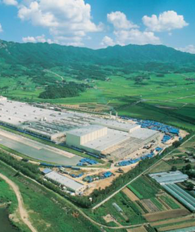

컨텐츠영역
환경/플랜트사업
-

연천 먹는샘물공장 신설공사 위치: 경기도 연천군 백학면
공사기간: 2006.10 ~ 2009.06
규모: 연천 먹는샘물공장 신설공사
-
곡성하수처리장 위치: 전남 곡성군
공사기간: 2003 ~
규모: 시설용량 : 4,500톤/일
-
송대 하수처리장 위치: 광주광역시 광산구 본덕동
공사기간: ~
규모: 시설용량 : 12,000톤/일
-
장수 축산폐수 처리장 위치: 전북 장수군 장계면 금곡리
공사기간: ~
규모: 처리용량 : 100㎥/일
-
금호타이어 하남공장 위치: 전라남도 하남
공사기간: 1991.09 ~ 1992.12
규모: 건축연면적 102.538㎡
-
 금호타이어 곡성공장 위치: 전라남도 곡성군
공사기간: 1996.06 ~ 1996.12
연면적: 건축연면적 184,914㎡, 대지면적 77,057㎡